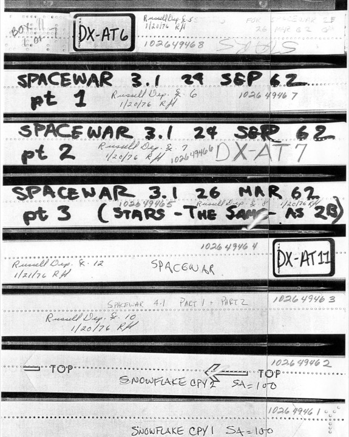
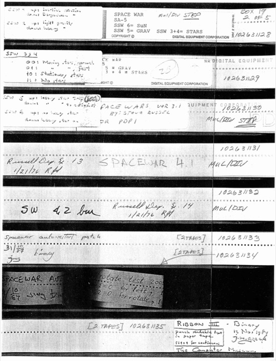

Versions of Spacewar!
Spacewar! is not one program but a family of them. Across 1962 and 1963 it was written, patched, and re-patched by a shifting cast of authors, and later reconstructed and extended by preservationists. For a critical code reading this matters: there is no single canonical text, only a variorum, and the differences between versions are themselves evidence of how the game, the machine, and the culture around them changed.
This page summarises the principal versions. Every one of them can be played, in faithful emulation, at Norbert Landsteiner's masswerk.at/spacewar, on whose detailed documentation this summary draws throughout.
| Version | Reference | Date | Author(s) | Status | Medium | Code | Key points |
|---|---|---|---|---|---|---|---|
| 1 | SW1R | 1961 / early 1962 | Russell, with the Hingham Institute group | LOST | – | [Text] | First playable: two ships and torpedoes, no gravity or hyperspace. |
| 2A | – | Mar 1962? | Russell, Edwards, Samson | LOST | – | – | Inferred: the March 1962 integration stage before 2B, where gravity (Edwards) came together. No source known. |
| 2B | SW2BR SW2B-preL | 2 Apr 1962 | Russell, Samson, Graetz, et al. | RECOVERED | Paper tape | [Text] | First complete version, shown at MIT Parents' Weekend. Expensive Planetarium (Samson), gravity, single-shot torpedoes; hyperspace followed as a separate patch in May. |
| 3.1 | SW3.1L SW3.1T | 24 Sep 1962 | Russell | RECOVERED | Paper tape | [Text] | The standard version, patches consolidated; the most widely preserved and emulated. |
| 4.0 | SW4.0L | 2 Feb 1963 | Preonas ("ddp") | RECOVERED | Source listing | [Text] [PDF] | Base of the whole 4.x family: hardware multiply/divide and floating-point gravity, no score display. Identified and extracted from the Morris scan by the CCS team; the dfw fork branches from it. |
| Spacewar! 4 · the ddp fork, Monty Preonas (Diamantis Drakos Preonas), later with Joe Morris | |||||||
| 4.0TS | SW4.0TSL | 4 May 1963 | Preonas ("ddp") | RECOVERED | Source listing | [Text] [PDF] | A "Twin Star" variant of 4.0: simplified starfield (4th-magnitude stars removed) and minor hyperspace changes. Recovered by the CCS team. |
| 4.2 | SW4.2L | 11 May 1963 | Preonas ("ddp") | RECOVERED | Source listing | [Text] [PDF] | Restored Expensive Planetarium; the first on-screen score display; complex input parsing via iot 111. |
| 4.3 | SW4.3L SW4.3M | 17 May 1963 | Preonas ("ddp") | RECOVERED | Source listing | [Text] [PDF] | 4.2 plus a Twin Star subjective view on sense switch 2: the display recentres on the Needle. |
| 4.4 | SW4.4L SW4.4M SW4.4Mf | 17 / 21 May 1963 | Preonas ("ddp") & Morris | RECOVERED | Source listing | [Text] [PDF] | Dual-console version: alternate frames go to a second scope so each pilot's ship holds the centre. Preonas numbers it 4.3. |
| Spacewar! 4 · the dfw fork, author unknown ("dfw" is the great Spacewar! mystery) | |||||||
| 4.1 | SW4.1L SW4.1T | 20 Feb 1963 | "dfw" | RECOVERED | Listing + tape | [Text] | The dfw fork, built on Preonas's 4.0: dotted central sun, major code reorganisation. The original 1963 source survives in Steve Russell's tape box, recovered by the CCS team; see 4.1f for the later museum reconstruction. |
| 4.2a | SW4.1L SW4.1T | ~22 Feb 1963 | "dfw" | RECOVERED | Listing + tape | [Text] | Working single-shot mode; "no visible differences to 4.1 dfw." Survives as pt 2 of the original 4.1 listing and as an authentic paper tape (Russell's box). |
| 4.5 / 4.6 / 4.7 | – | May–Jul 1963 | unknown | LOST | – | – | Lost. Three versions between the 4.4 experiment (May) and the stable 4.8 (July); a comment in 4.8 shows one carried dual thrust/velocity controls. No source survives. |
| 4.8 | SW4.8L | 24 Jul 1963 | "dfw" | RECOVERED | Source listing | [Text] [PDF] | The last classic MIT version, with the score display reworked by Samson. The identity of "dfw" has never been established. |
| 4.1f | SW4.1Mf SW4.1Md | base 20 Feb 1963; mod. 2005–08 | dfw; reconstructed by Samson | RECOVERED | Source listing | [Text] | Not a 1963 release but Samson's Computer History Museum reconstruction of dfw 4.1: the 4.8 score display grafted on, star intensities remapped, tweaked to 2008. Now that the original 4.1 survives, the two can be read side by side. |
Status reflects what survives: Recovered, a complete program (a paper-tape image or full source); Partial, reassembled from incomplete listings; Lost, no source known. Medium is the form in which it survives: a binary paper tape image (the program as loaded into the PDP-1) or a printed source listing (from which the program is reassembled). Code links the surviving source directly: [Text] a readable listing, [PDF] a scanned original; the per-version detail below gives the full set of files where there is more than one.
Sources: reconstructed listings for several versions at masswerk.at/spacewar/sources (linked per version below); authentic binary paper-tape images at bitsavers.org.
Citing the source code
Because Spacewar! survives as many texts rather than one, a reading needs to say which text, and where in it. The project names each surviving text in one form, used in its citations and in the Reference column above:
[REF: SW3.1T, 2.141–146]
SW, then the version (3.1), then a letter for the witness, the particular surviving text of that version (T); then the tape (2, in the order the assembler read the tapes) and the lines (141–146).
| Letter | The witness |
|---|---|
| T | machine-read from the punched source tape |
| L | a transcription: typed text of a listing or a tape |
| M | a modern reassembly or edited source |
| R | a reconstruction |
| B | an object tape (binary), cited by address only |
Shorter forms: the version and witness alone, [REF: SW3.1T]; a whole tape, [REF: SW3.1T, 2]. The tape is left out when a text has only one: [REF: SW4.3M, 141]. By core address, [REF: SW3.1L, @0402–0407]: an address holds across texts of a version that assemble to the same words, and is the only way to cite an object tape. Two texts of one version with the same letter take a lower-case qualifier: SW4.4Mf. A newly found text takes its version and the next letter or qualifier; a new version, its own number.
A port, a program for another machine, is not a text of any PDP-1 version and has a namespace of its own: SWP, the machine, the program, and its own version number, or its year when it has none: [REF: SWP-PDP6-WAR44, 76]. Several files of one program are its parts: [REF: SWP-PDP10-SW71, 2.14] is line 14 of SHIPS.SAI. A port has no witness letter unless it survives in more than one text.
For the exact bytes of a file, cite its SWHID (Software Heritage, ISO/IEC 18670:2025) alongside. A SWHID opens through Software Heritage’s resolver, archive.softwareheritage.org/swh:1:cnt:…, once the repository is archived there; the part after the first semicolon (origin, path, lines) qualifies it and is not a web address. For a link that works meanwhile, cite the file on GitHub at a given commit, to the lines.
Source code versions
The version’s date is the program’s; the text held may be later: a transcription, a reassembly, a reconstruction. Each name opens the text (a text in several files has a link for each further part; tapes open on GitHub). A reference or a SWHID copies on a click.
| No. | Reference | Version | Author | Version dated | This text | SWHID |
|---|---|---|---|---|---|---|
| 1 | SW1R | Spacewar! 1 | Russell, with the Hingham Institute group | 1961 / early 1962 | reconstructed by Norbert Landsteiner, April 2016 (revised 2021); not an authentic program | c75330d |
| 2 | SWEPL | Expensive Planetarium | Peter Samson ("prs") | 13 Mar 1962 | source listing | 3f30894 |
| 3 | SW2B-preL | Spacewar! 2B (25 March listing) | Russell, Samson, Graetz, et al. | 25 Mar 1962 | a transcription of the 25 March 1962 listing (masswerk, 2014) | 195a434 |
| 4 | SW2BR | Spacewar! 2B | Russell, Samson, Graetz, et al. | 2 Apr 1962 | reconstructed from the disassembled binary by Norbert Landsteiner, 2014 | 0334b3d |
| 5 | SW3.1L | Spacewar! 3.1 | Russell | 24 Sep 1962 | a text from bitsavers (SteveRussell_box1/_text), as compiled by masswerk | 566883c |
| 6 | SW3.1T | Spacewar! 3.1 (source tapes) part 2 part 3 | Russell | 24 Sep 1962; tapes 29 Sep 1962 | read by the project from Russell’s source tapes of 29 September 1962 | 1b393c1 5c6ecae 7eb882a |
| 7 | SW4.0L | Spacewar! 4.0 | Monty Preonas ("ddp") | 2 Feb 1963 | source listing | 1f3f22e |
| 8 | SW4.1L | Spacewar! 4.1 / 4.2a (dfw) | "dfw" | 20 / 22 Feb 1963 | listing and tape | 975c027 |
| 9 | SW4.1T | Spacewar! 4.1 / 4.2a (dfw, source tape) | "dfw" | 20 / 22 Feb 1963 | read by the project from the dfw source tape | d8bb44f |
| 10 | SW4.0TSL | Spacewar! 4.0TS | Monty Preonas ("ddp") | 4 May 1963 | source listing | b5ffb99 |
| 11 | SW4.2L | Spacewar! 4.2 (ddp) | Monty Preonas ("ddp") | 11 May 1963 | source listing | a503568 |
| 12 | SW4.3L | Spacewar! 4.3 (ddp, Morris listing) | Monty Preonas ("ddp") | 17 May 1963 | source listing | ed21e7e |
| 13 | SW4.3M | Spacewar! 4.3f (masswerk, fixed) | Monty Preonas ("ddp"); fixed by Landsteiner | 17 May 1963; fixed 28 Feb 2015 | fixed by Norbert Landsteiner, 28 February 2015; not an authentic program | 2f06f13 |
| 14 | SW4.4L | Spacewar! 4.4 (ddp, Morris listing) | Monty Preonas ("ddp") & Joe Morris | 17 / 21 May 1963 | source listing | d7311bb |
| 15 | SW4.4M | Spacewar! 4.4 (masswerk) | Preonas & Morris; reassembled by Landsteiner | 21 May 1963 | reassembled by Norbert Landsteiner | 1b66896 |
| 16 | SW4.4Mf | Spacewar! 4.4f (masswerk, fixed) | Preonas & Morris; fixed by Landsteiner | 21 May 1963; fixed 12 May 2015 | fixed by Norbert Landsteiner, 2015 | 6d6aa30 |
| 17 | SW4.8L | Spacewar! 4.8 part 2 part 3 | "dfw"; scorer by Samson | 24 Jul 1963 | source listing | e6327b3 d399d7f 4574ba0 |
| 18 | SW4.1Md | Spacewar! 4.1 CHM rev. d | "dfw"; reconstructed by Peter Samson | base 20 Feb 1963; mod. Jun 2005 | reconstructed by Peter Samson, June 2005 | 9a593d0 |
| 19 | SW4.1Mf | Spacewar! 4.1f (CHM) | "dfw"; reconstructed by Peter Samson | base 20 Feb 1963; mod. 2005 to 2008 | reconstructed by Peter Samson, 2005 to 2008 | 62f7972 |
| 20 | SW2015M | Spacewar! 2015 | Norbert Landsteiner | 2015 | written by Norbert Landsteiner, 2015 | 3f6cd4f |
Ports
Named whether or not a text is held, so that a port can be cited as a program. A port takes a witness letter only when it survives in more than one text, or when the text held is not its own (SWP-CDC3100-SPACEWAR66R, a reconstruction).
| No. | Reference | Program | Machine | Where and by whom | Date | SWHID |
|---|---|---|---|---|---|---|
| 1 | SWP-PDP4-SPACEWAR63 | Spacewar no text held | PDP-4 | University of Michigan | 1963 | |
| 2 | SWP-DDP224-SPACEWAR64 | Spacewar no text held | DDP-224 | University of Michigan | 1964 | |
| 3 | SWP-PDP6-SPACEWAR64 | Spacewar no text held | PDP-6 | Stanford (Steve Russell) | 1964 | |
| 4 | SWP-S360-SPACEWAR65 | Spacewar no text held | IBM System/360-65 | MIT Computation Center (Edson Hendricks) | 1965 | |
| 5 | SWP-PDP7-SPACEWAR65 | Spacewar no text held | PDP-7 | University of Pittsburgh (Russell Randshaw) | 1965 | |
| 6 | SWP-CDC3100-SPACEWAR66R | Spacewar, reconstructed | CDC 3100 | University of Minnesota (A. W. Kuhfeld); reconstruction by Norbert Landsteiner, 2014 | 1966–69 | 0edcfda |
| 7 | SWP-PDP8-SPACEWAR71 | Space War | LAB-8 (PDP-8) | Evan Suits (DECUS) | 1965–68; listing 1971 | 2d216a4 |
| 8 | SWP-PDP10-SW71 | Space War (SW; part 1 SW.MAC, part 2 SHIPS.SAI) part 2 | PDP-10 | Stanford AI Lab: Steve Russell, 1967; Ralph E. Gorin’s version with R. Taylor | 1971–72 | bb15656 f57087a |
| 9 | SWP-PDP6-WAR44 | WAR 44 | PDP-6 | MIT (Samson’s DECtape) | c. 1968 | a152aa4 |
| 10 | SWP-PDP7-DUEL68 | Duel no text held | PDP-7 | Cambridge Univ. Maths Lab (M. S. Peterson, J. C. Viner; DECUS 7-40) | June 1968 | |
| 11 | SWP-LINC8-SPCWAR68 | SPCWAR no text held | LINC-8 | University of Pennsylvania (E. Duffin; DECUS L-39) | 12 Aug 1968 | |
| 12 | SWP-NOVA-SPACEWAR68 | Spacewar no text held | Data General NOVA | Fall Joint Computer Conference | 1968 | |
| 13 | SWP-PLATO-SPACEWAR69 | Spacewar no text held | PLATO / ILLIAC | University of Illinois (Richard W. Blomme) | 1969 | |
| 14 | SWP-IBM1620-SPACEWAR69 | Spacewar no text held | IBM 1620 | Jim Burroughs | c. 1969 | |
| 15 | SWP-PDS1-SPACEWAR70 | Spacewar no text held | Imlac PDS-1 | 1970 | ||
| 16 | SWP-GT40-SPCWAR73 | SPCWAR | GT40 (PDP-11) | Stanford AI Lab (Botond G. Eross) | 1973 | 56ff652 |
| 17 | SWP-GT40-DECUS11-192 | SPCWAR (DECUS 11-192) | GT40 (PDP-11) | Larry Bryant and Bill Seiler | 1974 | 6e9da15 |
| 18 | SWP-PDP12-SPCWAR3 | SPCWAR, version 3 | LINC-8 / PDP-12 | Georgia Tech (D. E. Wrege) | 1974 | 393a360 |
| 19 | SWP-ITS-SPCWAR76 | SPCWAR (log to version 163) | PDP-6/10, ITS | MIT AI Lab | 1976 | 4168c2b |
| 20 | SWP-ITS-NEWWAR76 | NEWWAR (log to version 163) | PDP-6/10, ITS | MIT AI Lab | 1976 | 164d74c |
| 21 | SWP-ITS-TVWAR | TVWAR | Knight TV, ITS | MIT AI Lab | 07ac784 | |
| 22 | SWP-GT40-MIT76 | Spacewar (object tape) | GT40 (PDP-11) | MIT AI Lab (Richard C. Waters, Meyer A. Billmers) | c. 1976 | 68af994 |

Spacewar! 1 (1961 to early 1962) LOST
The first playable version, written by Steve Russell and the Hingham Institute group and running by early 1962: two ships, torpedoes, and a background of dots (Graetz recalled in 1990 that the early "stars" were a display of unused memory, where the debugger DDT normally sat), but no gravity and no hyperspace. The original is lost and survives only through reconstruction. reconstructed source code ›
Spacewar! 2A (March 1962?) LOST
No source survives, so what follows is informed inference. The name implies the version: a letter suffix exists because there is an earlier sibling, and Landsteiner notes that 2B's exhaust flames are half the size of later versions, "hinting at the slower speed of an even earlier version." 2A is best read not as a clean release but as the active integration stage of March 1962, just before the Parents' Weekend showing. Several strands converge here. Dan Edwards's outline compiler, which turned compact ship outlines into efficient display instructions, freed enough processor time to make the next step affordable: gravity for the central star, also Edwards's work (who first drew the star is disputed), which turned Russell's inertial duel into a contest of orbits. At the same time Peter Samson was writing the Expensive Planetarium, the accurate starfield whose surviving data is annotated "stars by prs for s/w 2b" and dated 13 March 1962. The earliest documented pre-2B build carries a date of 25 March 1962. On this reading, 2A is the version in which Spacewar! acquired the gravity that made it a game.
Spacewar! 2B (2 April 1962) RECOVERED
The first complete version, and the one shown to the public at MIT Parents' Weekend that month, arguably the first public showing of a digital video game. It carries Peter Samson's Expensive Planetarium (the real star background, devised for this version), but no hyperspace: its source leaves a place for it ("here put more bells and whisles, like hyperspace"). Martin Graetz's hyperspace came as a separate patch tape, its listing titled "Hyperspace VIci" and dated 2 May 1962: three jumps a ship, without risk, the warp drawn with the look of Minsky's display hack, the "Minskytron signature". It survives in Graetz's retyping of 1985. Explosions are blocky and torpedoes single-shot. A curious detail: 2B already assigns each ship a fuel supply, but never actually spends it. This is the version closest to the game's public birth. source code ›
Spacewar! 3.1 (24 September 1962) RECOVERED
The standard version. Returning briefly to MIT, Steve Russell consolidated the scattered patches into one coherent program. It is the version most often preserved and emulated. It is also the first in which fuel is really burned: the rate of consumption is tied to the visual extent of the flickering, random-length exhaust trails, so that thrusting harder both looks and costs more, an instance of what Landsteiner calls the game's "aesthetic realism." source code ›
A new line emerged in 1963 that required the PDP-1's hardware multiply/divide option. Monty Preonas (signing "ddp") rewrote the gravity routine using floating-point conversions in version 4.0. From that common base the line split into two forks: Preonas's ddp fork (4.0TS, 4.2, 4.3, 4.4), which added the first on-screen score display and the Twin Star subjective view, and the dfw fork (4.1, 4.2a, 4.8), carried by an author who has never been identified. The forks were not sealed off from each other: Preonas built 4.2 on dfw's 4.1 rather than on his own 4.0TS, taking its sun, its fix to the single-shot switch and its longer frame. The masswerk genealogy calls the identity of "dfw" the great Spacewar! mystery.

Spacewar! 4.0 (2 February 1963) RECOVERED
The base of the 4.x line, by Monty Preonas ("ddp"). It introduced the floating-point gravity routine and the hardware multiply/divide requirement that all later 4.x versions inherit. There is no on-screen score display yet. The source survives as a listing held by Joe Morris and scanned to bitsavers. source listing (PDF) › · normalised text ›
Spacewar! 4.0TS (4 May 1963) RECOVERED
A variant of 4.0 in Preonas's ddp fork, signed "spacewar 4.0ts 5/4/63 ddp." What "ts" stands for is not recorded: it has been read as Twin Star, but the subjective view of that name came only with 4.3, and 4.0TS has none. It is 4.0 with a simplified starfield (the 4th-magnitude star group removed) and a small hyperspace change: a ship re-entering normal space is given a random spin rather than the fixed one of 4.0. It was recovered by the CCS team. source listing (PDF) › · normalised text ›
Spacewar! 4.1 (20 February 1963) RECOVERED
The base of the "dfw" fork, signed and dated "spacewar 4.1 2/20/63 dfw" and built directly on Preonas's 4.0: a dotted central sun and a major code reorganisation. The original 1963 source survives, recovered by the CCS team from Steve Russell's own box of paper tapes (its second part is the 2/22/63 dfw 4.2a). For years the only accessible 4.1 was Samson's later museum reconstruction (see 4.1f); the original now lets the two be read side by side. original source (txt) ›
Spacewar! 4.1f (20 February 1963; mod. 2005 to 2008) RECOVERED
The version the Computer History Museum's restored PDP-1 plays for visitors, and so, for many people, the face of Spacewar! itself. It repays a close look, because it is not a historical release but a 2005 assemblage: a 4.1 base of 20 February 1963 with the 4.8 score display grafted on and the star intensities remapped to the museum's own machine, adjusted again as late as 2008. The canonical public Spacewar! is, in this sense, a reconstruction, and that a museum of computing exhibits a retrofitted composite as the original is itself a fact a critical reading should register. Now that the original 1963 4.1 has resurfaced (above), the reconstruction can be measured against it directly, which sharpens the point rather than dissolving it. The MACRO source carries Samson's own log at its head: "SW4.1f/spacewar 4.1 mod for CHM, 2005-06-01 to 2005-11-28 ... changed delay in score display, 2008-08-22." Its earlier June 2005 checkpoint survives too, as revision "d". source code (rev. f) › · paper-tape image › · earlier rev. d ›
Spacewar! 4.2a (22 February 1963) RECOVERED
The "dfw" fork's single-shot version, with a slightly fainter, dotted central sun and, per the genealogy, "no visible differences to 4.1 dfw." Its number collides with Preonas's unrelated ddp 4.2: "dfw" used "4.2" here on 22 February 1963, nearly three months before the ddp 4.2 of 11 May, and the two are different programs from the two forks, this one a single-shot revision of 4.1 dfw with no score display. Its source survives as the second part of the original 4.1 listing (the 2/22/63 dfw pt 2) and as an authentic paper tape in Steve Russell's box, both recovered by the CCS team. original source (txt) ›
Spacewar! 4.2 (11 May 1963) RECOVERED
Monty Preonas's own 4.2, which shares only its number with the dfw fork's earlier "4.2" (the 22 February 4.2a above). They are separate programs: where the dfw version is a single-shot revision of 4.1 with no scoring, this ddp 4.2 of 11 May restores the Expensive Planetarium and carries the first on-screen score display, drawn using the outlines of the two ships, and a starfield reminiscent of 2B. The score routine is about two and a half pages long and signed by no one. The source survives as a listing held by Joe Morris, signed "spacewar 4.2 5/11/63 ddp"; its symbol table was assembled by Morris himself ("jcm") on 23 May 1963. source listing (PDF) › · normalised text ›
Spacewar! 4.3 (17 May 1963) RECOVERED
By Monty Preonas ("ddp"), notable for its Twin Star mode, a subjective view rendered from the Needle's perspective and reached on sense switch 2: an early experiment in point-of-view rendering. The original ddp listing survives in the Morris scan. The masswerk text is Norbert Landsteiner's fixed version of 2015 (4.3f, not an authentic program), which repairs the subjective view and replaces 4.3's star display with 3.1's; the scanned original keeps the period code, including the active score-display encoder. Landsteiner's fixed 4.3f (2015) › · original listing, Morris scan (PDF) › · normalised text ›
Spacewar! 4.4 (21 May 1963) RECOVERED
The fullest of the subjective-view experiments, and the richest single find on this page. In Monty Preonas's own later account, a second oscilloscope compatible with the PDP-1 was in the lab for three or four months. At first it served only as a second console, so two players with separate hand controls no longer crowded one screen. Preonas then rebuilt the display to give each cockpit its own view: every other frame was sent to the opposing console, so that on each screen that pilot's ship, the "thin" Needle or the "fat" Wedge, held the centre while the rest of the universe moved around it. By his account it "worked very well," a fully playable game, with one cosmetic flaw: the alternating frames produced a doubled, "twin" star at the centre, never corrected before the borrowed scope was taken away. By giving two players distinct real-time perspectives at once, it predates any other known example of the form by roughly ten years. The listing is signed "ddp," its two parts dated 17 and 21 May 1963, and appears to have been edited by Joe Morris alongside Preonas. A numbering knot remains: Preonas calls this version 4.3, while the reconstruction reserves 4.3 for the simpler single-screen ego view and files this as 4.4. Preonas later donated his annotated listing to the New Mexico Museum of Natural History and Science in Albuquerque. reconstructed source, masswerk › · original listing, Morris scan (PDF) › · normalised text ›
"Version 4.3 was developed when for about a period of 3 or 4 months a new oscilloscope compatible with the PDP-1 was available in the computer lab. At first, we used this scope as the second pilot's console so combatants weren't bumping into each other even though they had separate hand-held consoles. Then I decided to start Version 4.3 to provide a pilot's view from each cockpit. This was accomplished by having every other frame go to the opposing console so that both the 'thin' and 'fat' pilot's ships were stationary in the center of the frame. It worked very well, except we wound up with a double 'twin' star because of the every other frame issue. We ran out of time and had too much fun learning how to play this more difficult version to correct the twin-star problem before we no longer had access to the oscilloscope. As a minor issue, I don't remember who first started keeping score (it was probably me); but I do remember coding a larger ship for every five wins. D.D. "Monty" Preonas, recalling the version he numbered 4.3 (the reconstruction files it as 4.4).
Spacewar! 4.5 (May to July 1963) LOST
Lost, together with 4.6 and 4.7. The three sit in the gap between the 4.4 experiment of late May and the stable 4.8 of 24 July 1963, and no source survives for any of them. What can be said about them has to be reasoned backwards from the versions on either side.
Spacewar! 4.6 (May to July 1963) LOST
Lost. A comment left in the 4.8 source shows that one of these three versions offered dual thrust, or velocity, controls. Which of the three it was cannot now be said.
Spacewar! 4.7 (May to July 1963) LOST
Lost. Since 4.4 left its twin-star fault uncorrected and 4.8 runs clean, it is plausible that one of these missing versions was the issue-free iteration in between. Plausible, but unprovable: the tapes were cut up and thrown out, and the gap in the record is itself part of what the version history records.
Spacewar! 4.8 (24 July 1963) RECOVERED
Apparently the last MIT version, signed "dfw." It carries the on-screen score display in its final form, the Preonas score routine as reworked by Peter Samson. The initials "dfw" have never been identified: in a 2005 exchange neither Steve Russell nor Joe Morris, both present in the lab, could put a name to them. The most polished version of the founding video game is signed by a hand the founders themselves could not place. source code, part 1 › · part 2 › · scorer display ›
Scanned listings: part 1 (PDF) › · part 2 (PDF) › · scorer (PDF) ›
Variants, hacks, and kin
Landsteiner's emulator also carries reconstructions and extensions worth noting for the reading. A Holloman Air Force Base variant restores altered starting positions recorded by a player in 1966. Spacewar! 2015 is Landsteiner's own new PDP-1 program, reviving the Minskytron hyperspace signature and a working subjective view. Parameter hacks such as "Winds of Space" warp the torpedoes' trajectories by tuning a single constant in memory. And the same emulator runs other early PDP-1 graphics programs, including the Minskytron itself and Snowflake.
Spacewar! leaves the PDP-1
Spacewar! did not stay on one machine. Through the 1960s and into the 1970s it was carried, re-coded, and reinvented on computers across dozens of labs, often rebuilt from memory or a magazine listing rather than the MIT source. That long journey, the full survey of ports and clones from Michigan and Cambridge to Minnesota, Stanford, Georgia Tech and the GT40, now has its own page.
The ports: the long journey beyond the PDP-1 →
See also the deep dives into the PDP-1 itself, the machine the game was written for, and the restorations that keep it runnable, hardware repairs, FPGA rebuilds and faithful emulation.
Built to be changed
The proliferation of versions is itself a finding. Every version but the earliest opens with a block of "interesting and often changed constants," arguably the first cheats in gaming, meant to be retuned at the console or in the debugger. The spaceship outlines are likewise defined as hackable strings of octal directives, compiled at run time by Dan Edwards's outline compiler, plausibly the earliest just-in-time compiler. The code was made to be modified, which is part of why the family is so large, and part of what the reading will pursue.
By the 1970s the code had begun to record its own history. The MIT-AI PDP-10 SPCWAR source opens with the eight names the program passed through, WAR → SWAR → SUPER → STAR → SPACE → SPACE4 → NSPACE → SPCWAR, followed by a dated modification log and the note that, on 9 April 1976, new nine-bit control consoles were wired into the PDP-6. The program documents its own variorum: the version history is not only reconstructed by us from outside, it is partly written into the comments by the hackers who kept it running.
Version histories, dates, and technical detail summarised here are drawn from Norbert Landsteiner's masswerk.at/spacewar, where each version can be played and is documented far more fully than this overview.
Cheats and hacks
If the family is large because the code was built to be changed, the changes themselves are worth cataloguing. Some are cheats in the original sense, parameters the program exposes so a player or programmer can retune the rules. Others are hacks, features bolted on by whoever had a better idea. Together they record how the game, the machine, and the people around it actually worked.
The changeable constants
Every version from 4.0 onward opens with a block headed "interesting and often changed constants": torpedo count and velocity, reload time and torpedo life, fuel supply, the gravitational constant, the ration of hyperspace jumps, and more. The listing notes that "all instructions are executed, and may be replaced by jda or jsp", so the block is not inert data but live code, meant to be retuned at the console test word or patched in the DDT debugger. These are, arguably, the first cheats in gaming: the rules made adjustable by design, in the lineage that runs from Steve Russell's original.
Hyperspace, the panic button
Martin Graetz wrote hyperspace as a patch to 2B (its listing, "Hyperspace VIci", is dated 2 May 1962): it flings a cornered ship to a random point and back, three times at most and without risk, and draws the warp with the "Minskytron signature", the smear pattern of Marvin Minsky's display hack. For 3.1 (September 1962) Steve Russell rewrote it into the program and dropped the Minskytron effect. In 3.1 it is the game's random-number routine driving a scaled displacement, with the constants hr1 and hr2 setting how far you jump and how hard you arrive, a strict ration of jumps (mhs), and a rising chance of materialising inside an explosion as the "hyperfield generator" recharges (hd1, hd2, hd3).
Photon torpedoes: a cheat made of a hardware limit
When Dan Edwards added the central star's gravity, there were no PDP-1 cycles left to make gravity act on the torpedoes as well. Rather than slow the game, the team simply declared them photon torpedoes, immune to gravity by fiat. The gravity routine runs on ships only; the limit became a rule of the fiction. It is the cleanest case on the page of a hardware constraint folded straight into the design.
Reading the boxes
The hand controllers built by Bob Saunders and Alan Kotok in 1962 were themselves a hack of the software: by Saunders's account the boxes were wired and then a single instruction was changed so the program read them, over the iot lines, instead of the console sense switches. The control-word routine still carries both paths, a normal "iot 11" read and a fallback that takes control from the front-panel test word.
Sense switches and the test word
The PDP-1's console sense switches are wired straight into the logic as runtime toggles. The code branches on them with the szs (skip on sense switch) instruction: switch 2 selects a lighter central star, others turn the background stars on or off or, in the ddp line, switch on the subjective view. The front-panel test word, meanwhile, can be read directly for control or for tuning. On this machine the switches are part of the game's interface.
The subjective view
The boldest rendering hack is Monty Preonas's Twin Star, in 4.3 and 4.4. Technically the display is recentred on a chosen ship: a relocate routine subtracts that ship's coordinates from everything drawn, so the Needle holds the centre while the universe moves around it. In 4.4, alternate frames are sent to a second oscilloscope, giving each pilot their own cockpit view, point-of-view rendering roughly a decade before the form is usually dated.
Keeping score
Preonas added the first on-screen score display in 4.2, drawn by compiling small digit outlines through a routine over two pages long, with a pulsing separator line. Peter Samson reworked it into its final form for 4.8. The scorer reads the controllers a second time to encode the digits, a neat reuse of the input path.
Later hacks
The game kept being retuned long after MIT. A. W. Kuhfeld's Minnesota CDC-3100 version replaced hyperspace with invisibility: the panic button suppresses your ship's display without moving it, so you vanish, but so does your own view, and your exhaust and torpedoes still give you away, skill in place of luck. Parameter hacks such as "Winds of Space" warp the torpedoes by tuning a single constant in memory; the Holloman Air Force Base variant preserves a player's altered starting positions from 1966. And the PDP-10 versions went furthest: Ralph Gorin's Stanford SAIL Space War carries a routine (GETNAM) to change named parameters at runtime, the constants block grown into a live console for editing the rules.
Play version 3.1
This site runs the standard 1962 version, the one read here, in a PDP-1 emulator in your browser.
▶ Play The object